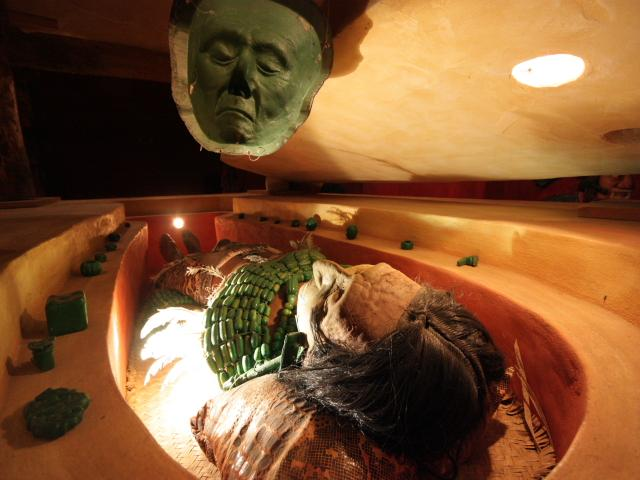
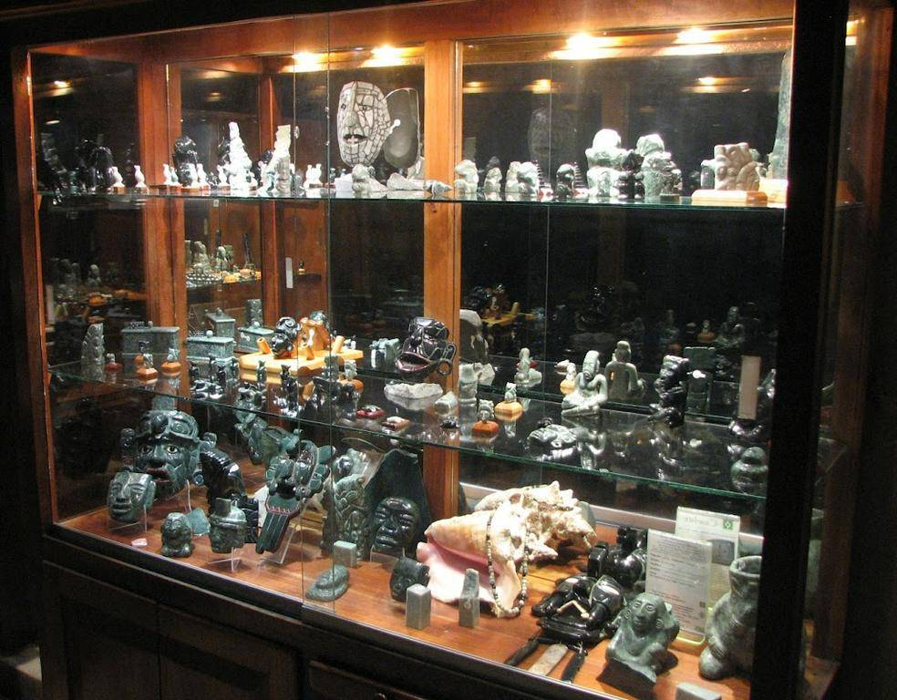
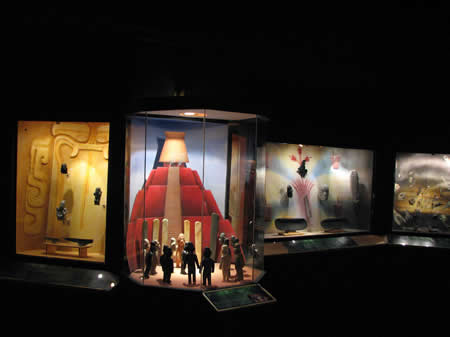
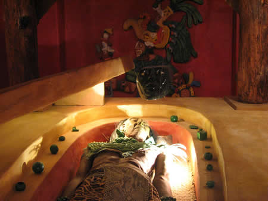
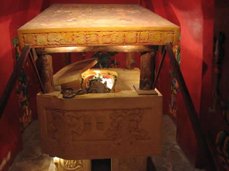

Este grandioso Museo exhibe una gran muestra de la producción textil de los artesanos chiapanecos, el proceso de elaboración de las vestimentas típicas de la región, y la evolución que tienen con forme pasa el tiempo.
Se localiza en Plaza Central s/n, Centro CP 29060, Palenque, Palenque Chiapas
Partiendo de Tuxtla Gutiérrez:
Diríjase a la 1ª salida en dirección a Ángel Albino Corzo, continúe por Panamericana(a Chiapa de Corzo), continúe por Tuxtla Gutiérrez-San Cristóbal de Las Casas/México 190, tome la salida de la izquierda, continúe en esa dirección (recto)- gire a la derecha con dirección a de las Américas/San Cristóbal de Las Casas-Comitán de Domínguez/México 190 – continúe en esa dirección – hasta girar a la izquierda con dirección a Ocosingo-San Cristóbal de Las Clases/San Cristóbal de Las Casas-Ocosingo/México 199 continúe en esa dirección (pase dos rotondas) - tome la 1ª salida en dirección a Benito Juárez – gire a la derecha con dirección a 2ª Avenida Sur Pte. (AV. 20 de Noviembre) – gire a la izquierda a 1ª Ote Sur (Jiménez) – continúe en esa dirección hasta doblar a la izquierda- llegara al Museo del Textil Lak Puj Kul.
Partiendo de Ocosingo:
Diríjase hacia la Internacional – continúe por Ocosingo-Palenque/Palenque-Ocosingo/México 199 – tome la 1ª salida en dirección a Benito Juárez – gire a la derecha con dirección a 2ª Avenida Sur Pte. (Av. 20 de Noviembre)- continúe en esa dirección – gire a la izquierda a 1ª Ote Sur (Jiménez) continúe en esa dirección hasta doblar a la izquierda se topara con el Museo.
Usted podrá admirar una gran cantidad de vestimentas que realizan los artesanos de la región.
Contáctanos: casa_chiapas_palenque@hotmail.com
Teléfonos:
(916) 345 28 55, (961) 602 65 65, 639 60 26





posicione el mouse sobre las imágenes